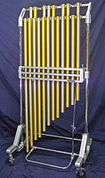
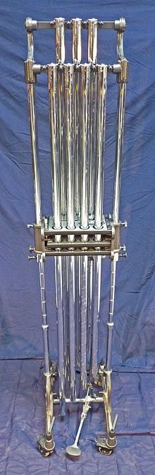

Tubular bells (also known as chimes) are musical instruments in the
percussion family.Their sound resembles that of church bells; the original
tubular bells were made to duplicate the sound of church bells within an
ensemble.
Each bell is a metal tube, 30–38 mm (1¼–1½ inches) in diameter, tuned
by altering its length. Its standard range is C4–F5, though many professional
instruments reach G5 (see photo). Tubular bells are often replaced by studio
chimes, which are a smaller and usually less expensive instrument.
Studio chimes
are similar in appearance to tubular bells, but each bell has a smaller diameter
than the corresponding bell on tubular bells.

Chimes/tubular bells:
Tubular bells are sometimes struck on the top edge of the tube with a rawhide-
or plastic-headed hammer. Often, a sustain pedal will be attached to allow
extended ringing of the bells.
They can also be bowed at the bottom of the tube
to produce a very loud, very high-pitched overtone.
The tubes used provide a purer tone than solid cylindrical chimes, such as those
on a mark tree.
Chimes are often used in concert band pieces. It rarely plays melody, instead
being used most often as a color to add to the ensemble sound.
It does have
solos occasionally, often depicting church bells.
Multi-instrumentalist Mike Oldfield has used tubular bells on many of his studio
albums, most notably Tubular Bells (1973), Tubular Bells II (1992) & Tubular
Bells III (1998).
He has also used them on most of his other albums such as
Hergest Ridge (1974), Ommadawn (1975), Incantations (1978), Crises (1983),
Islands (1989) and Amarok (1990).
Pink Floyd used tubular bells on The Dark Side of the Moon (1973) on the song
"Brain Damage" but are rendered almost inaudible on the original stereo mix and
quadrophonic mix.
The band's drummer, Nick Mason pointed out that he had
forgotten that they were on there until he heard them in the 5.1 surround mix
for the 2003 SACD 30th anniversary edition of the album, which has since been
released on DVD and BD.
Percussionist Carl Palmer used tublar bells on ELP's
Brain Salad Surgery tour featuring them on the song, "Toccata". As well as
during his solo. Culture Club guitarist Roy Hay used tubular bells on the song
Time (Clock of the Heart).

The Flaming Lips' 2002 track "Do You Realize??" features tubular bells.
Film composer James Horner took advantage of the heraldic quality of tubular
bells in his score for the Civil War film Glory.
The animated television series Futurama's theme is played on tubular bells.
The "funding for this program provided by ..." rider that followed the end
credits of the children's television show Sesame Street also prominently
featured tubular bells in the 1980s.
The Smashing Pumpkins' 1994 recording "Disarm" uses tubular bells to create a
haunting mood.
Tracey Ullman's 1983 cover of Kirsty MacColl's "They Don't Know" features
tubular bells in a celebratory manner, reminiscent of wedding bells.
Rush drummer Neil Peart used tubular bells on the songs "Xanadu" and "Closer to
the Heart." He has also used them on concert tours, as heard on the live album
Exit...Stage Left and seen on the accompanying video release.
On later tours,
Peart replaced the tubular bells with a more compact MIDI controller modeled on
a marimba, allowing him to reproduce a wide variety of percussion sounds.
However, on the band's recent R40 tour, the second set featured a retro
1970's-style kit complete with tubular bells, used on the songs "Jacob's
Ladder", "Closer to the Heart" and "Xanadu".
The award ceremony scene from the game Mario Kart Wii has some tubular bell
phrases played on its theme music.
Other uses:
Tubular bells can be used as church bells, such as at St. Alban's Anglican
Church in Copenhagen, Denmark.These were donated by HRH Prince Charles, Prince
of Wales.
Tubular bells are also used in longcase clocks, particularly because they
produce a louder sound than gongs and regular chime-rods and therefore could be
heard more easily.